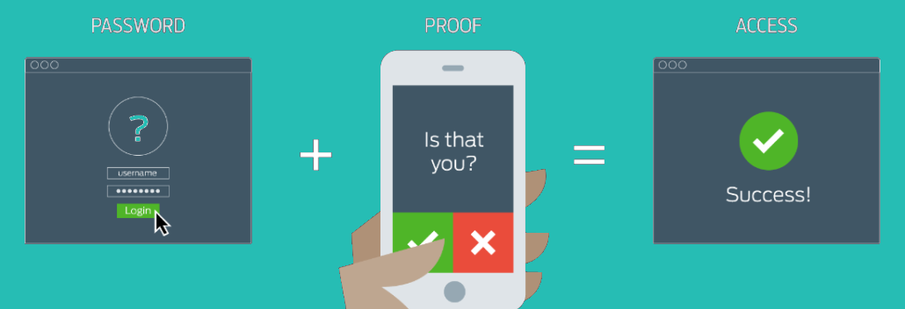

Personal Cyber Security
Pte Sykes
Prelims
Objectives
Introduction
What is being collected?
What is being collected?
Well, pretty much everything you do with your digital devices.Most significantly Third-Party Cookies and Full Location Records.
Why does this data collection matter?
Hacks are happening all the time
Check out real-time attack map, showing live hacks on companies and government organisations at: http://map.norsecorp.com
Chances are that you've already been hacked
You've probably already been hacked.
Check what details have been leaked, at:
https://haveibeenpwned.com/
Passwords
Password Security Basics
- Use a different passphrase for each account
- Ensure that each passphrase is strong
- Ideally 12+ characters
- Including numbers, symbols, upper and lowercase letters
- Don't include dictionary words, names or places
- Replacing o for 0, i for 1, or just adding an ! to the end doesn't help much
- Try to change all important passwords at least once a year
Password Managers
A password manager is a tool that securely stores and autofills your login information.
That means you only ever need to remember one password, and can easily use different, very complex passwords for each site. Most password managers come with a Windows, OS X, Android, iOS and Windows Phone app, as well as a browser extension.

Password managers are widely agreed to be the best approach for storing & auto-filling secure information.
Dashlane,
LastPass and
1Password
are all very good, reputable and easy to use options.
KeePass is an alternative, more advanced offline password manager.
Check how long it'd take to crack one of your passwords:
https://howsecureismypassword.net/
2-Factor Authentication
Two-factor authentication (also known as 2FA) is a type (subset) of multi-factor authentication. It is a method of confirming users' claimed identities by using a combination of two different factors: 1) something they know, 2) something they have, or 3) something they are.
Software Updates
Software Updates: How to stay secure
- Always install the latest operating system (Windows, OSX, Android and iOS) updates, when prompted to. Don’t ignore or postpone them
- Keep all apps and software on both your PC and phone up to date
- Ensure your antivirus definitions are kept update, or turn on autoupdate
- Update your router firmware
Encryption & Backup
Safe Browsing
VPN
Find a reputable VPN provider, to use on any public, shared, or potentially insecure networks